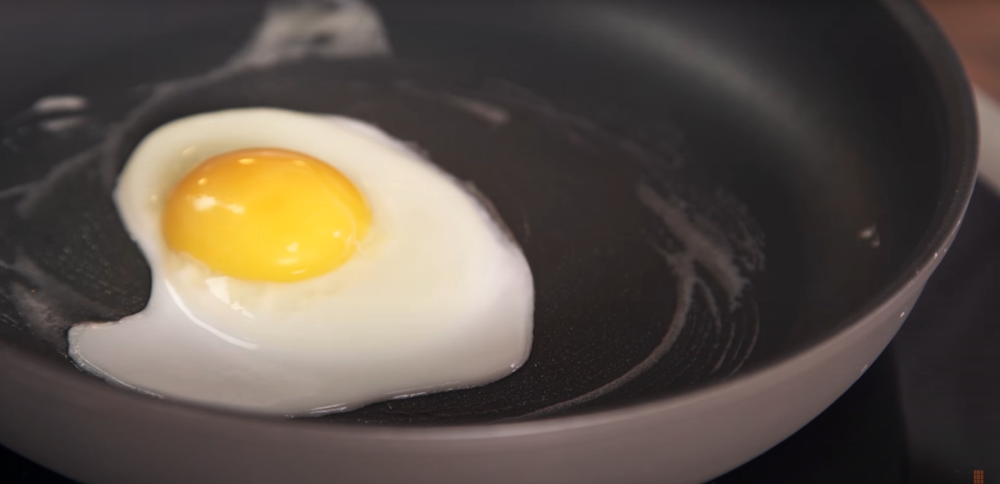

Fried Egg

Description
From the closest descendents of the mighty dinosaurs, who roamed the Earth millions of years ago, comes to us the humble chicken.
And from this creature, whence the egg is procured, we embark on a wide variety of culinary adventures.
The egg lends itself to many methods of preparation, one of which is frying. It is a very rudimentary method of cooking, yet the results
can be immaculate, given the cook is beholden to certain parameters. This recipe will cover the method of achieving an impossibly tender egg white
and a silky yolk.
Ingredients
Optional:
Method
- Heat a skillet on medium heat with a tablespoon of butter
- When the skillet is too hot to touch for longer than a second crack the egg in the skillet.
If using a large skillet, tilt it until the white has set enough in order to prevent the egg from coming out too thin.
- The white has set when it turns completely opaque, you may then season it
- The egg is done when the white is completely set. Remove from the skillet and serve on a slice of toast or a biscuit
- Garnish with black pepper and finely chopped parsley